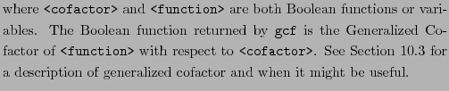
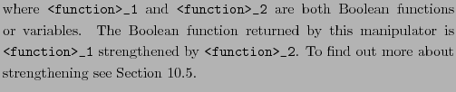
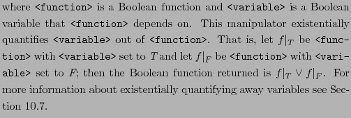
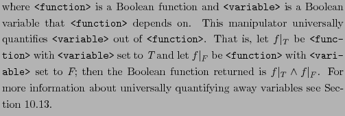
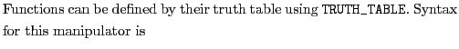
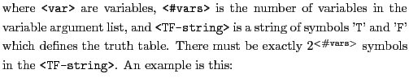
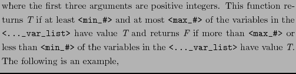
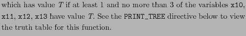
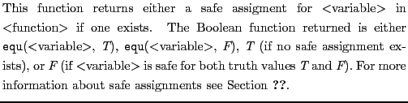

GCF
gcf ( <function> <cofactor> )

STRENGTHEN
strengthen ( <function>_1 <function>_2 )

PRUNE
prune ( <function>_1 <function>_2 )

EXIST
exist ( <function> <variable> )

UNIVERSE
universe ( <function> <variable> )

TRUTH_TABLE

truth_table ( <#vars> <var> ... <var> <TF-string> )

truth_table(3 x1 x2 x3 TTFFTFFT)
MINMAX
minmax ( <min_#> <max_#> <blank_separated_var_list> )

minmax(1, 3, x13, x12, x11, x10)

SAFE
safe ( <function> <variable> )
